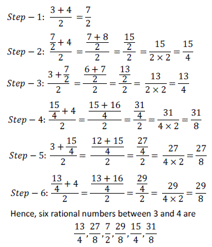
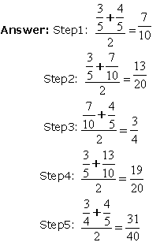
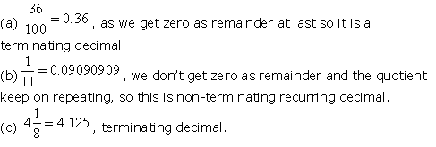
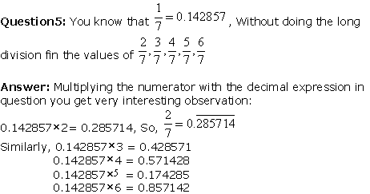
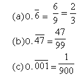

Ans: Zero can be written in the form p/q , where p and q are integers and q is not equal to 0. Therefore, zero is a rational number
Ans:
You can notice that by calculating averages between two numbers we get a number which is exactly between these two numbers.This way you can go on calculating infinite numbers of numbers.
Ans:
(a)Every natural number is a whole number.
(b)Every integer is a whole number.
(c)Every rational number is a whole number.
Ans:
(a) As natural number is all numbers starting from 1 and the whole number includes zero as well so this statement is true.On the other hand every whole number is not natural number as zero is not a natural number.
(b) Only positive integers are whole numbers.
(c) Rational numbers are not whole numbers as they are not complete.
Ans:
 Ans:
Put 9 for every non-zero digit in the denominator and zero for zero in the denominator.
Ans:
A fraction in lowest terms with a prime denominator other than 2 or 5 (i.e. coprime to 10) always produces a repeating decimal. The period of the repeating decimal, 1⁄p, where p is prime, is either p − 1 (the first group) or a divisor of p − 1 (the second group).
Examples of fractions of the first group are:
• 1⁄7 = 0.142857 ; 6 repeating digits
• 1⁄17 = 0.0588235294117647 ; 16 repeating digits
• 1⁄19 = 0.052631578947368421 ; 18 repeating digits
• 1⁄23 = 0.0434782608695652173913 ; 22 repeating digits
• 1⁄29 = 0.0344827586206896551724137931 ; 28 repeating digits
• 1⁄97 = 0.01030927 83505154 63917525 77319587 62886597 93814432 98969072 16494845 36082474 22680412 37113402 06185567 ; 96 repeating digits
Ans:
If the denominator is either 2 or 5 as its factor then the result will be terminating decimal. As 10 is the product of 2 and 5 so to have terminating decimal 2 or 5 are required. If there is a prime number other than 2 or 5 in the denominator then the decimal can or cannot be treminating.
Ans: